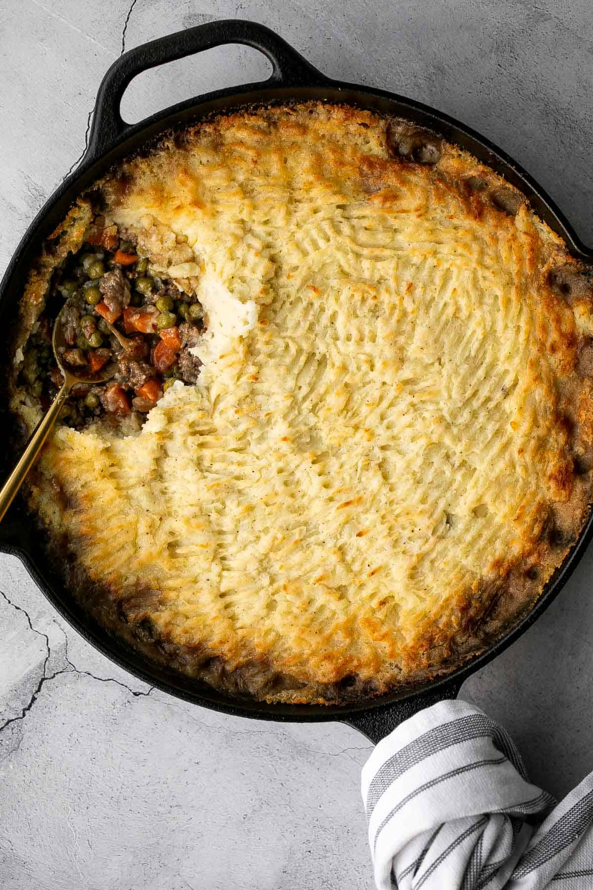

Shepherd's Pie

Description
Find out how to make one of Fall's best meals!
Ingredients
- 2 lb. russet potatoes
- 1/4 cup unsalted butter
- 1/3 cup milk
- 1/2 cup cheddar cheese
- 1/2 teaspoon garlic powder
- 2 tablespoons olive oil
- 1 large yellow onion
- 3 medium carrots
- 1 lb. ground beef
Steps
- Preheat oven to 400 F.
- Prepare the mashed potato topping.
- Make the beef mixture.
- Assemble and bake the shepherd's pie.